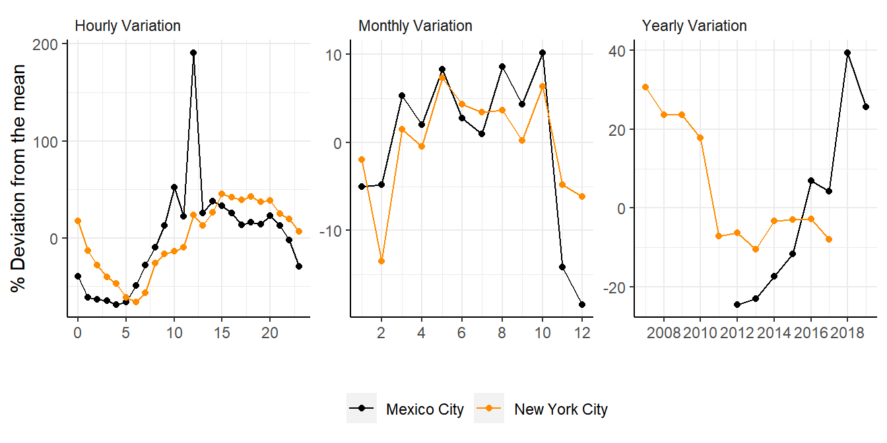

Study Exhibits
In this section, I present all the exhibits in the study: The nonlinear effects of pollution on crime: Evidence from Mexico City and New York – Forthcoming in Environmental Research - Health
I structure the section in four different subsections:
- Theoretical Background
- Data
- Results
- Robustness
- Appendix
These subsections are in line with the study’s structure. For each subsection, there is a panel-tabset of figures and tables part of the corresponding section in the printer article. Each tab contains the table and figure number that corresponds to the original study.
Theoretical Background
In the theoretical section of the study, I present a slight theoretical introduction to the relationship between air pollution and crime while building support for the hypothesis that air pollution has a non-linear effect on criminality. This section consist of four figures
- Figure 1: Probability mass function for different Poisson distributions. The figure presents the probability mass function of this study’s primary data set on the number of hourly crimes occurring in the vicinity of pollution measuring stations in Mexico City and New York alongside four simulated Poisson distributions with variances equal to 0.25, 0.5, 0.75, and 1.0
- Figure 2 (a): Relationship of the matching function with the number of victims and criminals. The figure shows the proposed theoretical relation between the match of victims and criminals in the market and the number of agents.
- Figure 2 (b): Relationship between exposure to air pollution and the number of victims and criminals. The figure shows the theoretical relationship between the number of agents in the market and air pollution.
- Figure 3: Theoretical relationship between air pollution and crime; the red line marks the level of air pollution that maximizes criminality, i.e., \(\frac{\partial crime}{\partial pollution} = 0\).
Show the Code
# Set the path
file = paste0(gsub("NonLinearCrime/","", getwd()), "/ReplicationFolder/")
# Load the data set
data = read_rds(paste0(file, "02_GenData/03_RegData/DataReg.rds"))
# Compute the different Poisson distributions
plot = list(`0.25` = data.frame(value = stats::rpois(3000000, 0.25 )) %>%
group_by(value) %>% summarise(count = n()) %>%
mutate(count = count/sum(count)),
`0.5` = data.frame(value = stats::rpois(3000000, 0.5 )) %>%
group_by(value) %>% summarise(count = n()) %>%
mutate(count = count/sum(count)),
`0.75` = data.frame(value = stats::rpois(3000000, 0.75)) %>%
group_by(value) %>% summarise(count = n()) %>%
mutate(count = count/sum(count)),
`1.0` = data.frame(value = stats::rpois(3000000, 1)) %>%
group_by(value) %>% summarise(count = n()) %>%
mutate(count = count/sum(count)),
`Real Sample` = data %>% group_by(value = total) %>% summarise(count = n())%>%
mutate(count = count/sum(count))) %>% rbindlist(., idcol = "Lambda")
# Plot the empirical data and the different poisson distributions
ggplot(dplyr::filter(plot, value < 10)) +
geom_line(aes(x = value, y = count, color = Lambda)) +
geom_point(aes(x = value, y = count, color = Lambda)) +
theme(panel.background = element_rect(fill = "transparent"),
strip.background = element_rect(fill = "transparent"),
strip.text = element_text(hjust = 0), legend.title = element_blank(),
legend.box.background = element_rect(fill = "transparent"),
legend.background = element_blank(), legend.key = element_rect(fill = "transparent"),
axis.line = element_line(), legend.position = c(0.85, 0.7)) +
ggpubr::grids() + labs(x = "k", y = "P(Crimes = k)") +
scale_x_continuous(breaks= scales::pretty_breaks()) +
scale_color_manual(values = c("gray20", "gray40", "gray60", "gray80", "orange"))
Notes: This figure presents the probability mass function of this study’s primary data set on the number of hourly crimes occurring in the vicinity of pollution measuring stations in Mexico City and New York alongside four simulated Poisson distributions with variances equal to 0.25, 0.5, 0.75, and 1.0
Show the Code
# Construct the dummy data
data = data.frame(temp = seq(0,40,2), s = seq(0, 1, 0.05), p = seq(1, 0, -0.05)) |>
mutate(s_1 = s*p) |> mutate(s_1 = ((s_1 - min(s_1))/(max(s_1)- min(s_1)))) |>
filter(temp <= 20)
# Plot the function
ggplot() + geom_line(data = data, aes(x = temp, y = s_1)) +
geom_point(data = data, aes(x = temp, y = s_1)) +
theme(panel.background = element_blank(), axis.line = element_line(), axis.text = element_blank()) + ggpubr::grids() +
labs(x = "V(t), C(t)", y= "m[V(t), C(t)]") Show the Code
# Construct the simulated data
data = data.frame(temp = seq(0,40,2), s = seq(0, 1, 0.05), p = seq(1, 0, -0.05)) |>
mutate(s_1 = s*p*-1) |> mutate(s_1 = ((s_1 - min(s_1))/(max(s_1)- min(s_1)))) |>
filter(temp <= 20)
# Plot the function
ggplot() + geom_line(data = data, aes(x = temp, y = s_1)) +
geom_point(data = data, aes(x = temp, y = s_1)) +
theme(panel.background = element_blank(), axis.line = element_line(), axis.text = element_blank()) + ggpubr::grids() +
labs(y = "V(t), C(t)", x= "Exposure to air Pollution") 
Descriptive Statistics (Data section)
This section corresponds to the Data section of the study. It contains a set of descriptive statistics and data documentation through two figures and one table.
- Figure 4: The grid shows the temporal behavior of criminality in Mexico City and New York. Clockwise it shows the hourly, monthly, and yearly variation concerning the average.
- Figure 5: Location of pollution measuring stations in Mexico City and New York.
- Table 1: Descriptive statistics on the number of hourly crimes happening in a two-kilometer radius around pollution measuring stations in Mexico City and New York.
Show the Code
# Set the path
file = paste0(gsub("NonLinearCrime/","", getwd()), "/ReplicationFolder/")
# Load the data set
data = read_rds(paste0(file, "02_GenData/03_RegData/DataReg.rds"))
# Aggregate to the hourly level
hr = data %>% group_by(value = as.numeric(hour), city) %>% summarise(count = sum(total)) %>%
group_by(city) %>% mutate(avg = mean(count, na.rm = T))%>%
mutate(dev = ((count-avg)/avg)*100) %>% mutate(variable = "Hourly Variation")
# Aggregate to the monthly leve
mo = data %>% group_by(value = as.numeric(month), city) %>%
summarise(count = sum(total)) %>% group_by(city) %>% mutate(avg = mean(count, na.rm = TRUE)) %>%
mutate(dev = ((count-avg)/avg)*100) %>% mutate(variable = "Monthly Variation")
# Aggregate to the yearly leve
ye = data %>% group_by(value = as.numeric(year), city) %>% summarise(count = sum(total)) %>%
group_by(city) %>% mutate(avg = mean(count, na.rm = TRUE)) %>%
mutate(dev = ((count-avg)/avg)*100)%>% mutate(variable = "Yearly Variation") %>%
filter(value != 2006)
# Rbindlist all data sets
temporal = rbindlist(list(hr, mo, ye)) %>% mutate(value = as.numeric(value))
# Change the name of the city
temporal = mutate(temporal, city = ifelse(city == "nyc", "New York City", "Mexico City"))
# Plot the deviation from the average
ggplot(temporal) + geom_line(aes(x = value, y = dev, color = city, group = city)) +
geom_point(aes(x = value, y = dev, color = city, group = city)) +
facet_wrap(~variable, scales = "free") +
theme(panel.background = element_rect(fill = "transparent"),strip.background = element_rect(fill = "transparent"),
strip.text = element_text(hjust = 0), axis.line = element_line(), legend.position = "bottom",
legend.title = element_blank(),) +
ggpubr::grids() + labs(x = "", y = "% Deviation from the mean") +
scale_color_manual(values = c("black", "darkorange")) +
scale_x_continuous(breaks= scales::pretty_breaks())
Show the Code
# Set the path
file = paste0(gsub("NonLinearCrime/","", getwd()), "/ReplicationFolder/")
#### Load the spatial data
nyc = read_sf(paste0(file, "01_RawData/03_shapefiles/NYC Buroughs")) %>%
mutate(city = "New York") %>% select(city)
cdmx = read_sf(paste0(file, "01_RawData/03_shapefiles/States in Mexico")) %>%
filter(ENTIDAD == "DISTRITO FEDERAL") %>%
mutate(city = "Mexico City") %>% select(city) %>% st_cast(., "MULTIPOLYGON")
# Exclude stations with no crimes during the entire period
data = data %>% group_by(station) %>% filter(sum(total) != 0)
PolSt = select(data, station, lon, lat) |> distinct()
# Create a data set of stations for Mexico City
stcdmx = select(data, station, lon, lat, city) %>% distinct()%>% filter(city == "cdmx") %>%
st_as_sf(., coords = c("lon", "lat"), crs = st_crs(nyc))
# create a data set of stations
stnyc = select(data, station, lon, lat, city) %>% distinct()%>% filter(city == "nyc") %>%
st_as_sf(., coords = c("lon", "lat"), crs = st_crs(nyc))
# Transform the stations into a spatial set
PolSt = st_as_sf(PolSt, coords = c("lon", "lat"), crs = 4326)
# Aggregate the shapefiles of ploygons and stations in both cities
shp = rbind(st_transform(nyc, crs = 4326), st_transform(cdmx, crs = 4326))
st = rbind(stcdmx, stnyc)
# Map the stations over Spain and Madrid
tmap_style("classic")
tmap = tm_graticules(labels.cardinal = F, alpha = 0.5, , labels.size = 0.75) +
tm_shape(shp) + tm_polygons(col = "black") +
tm_facets(by = "city") + tm_shape(st) +
tm_dots(size = 0.1, col = "white") + tmap_options(check.and.fix = TRUE) +
tm_compass(type = "rose", position = c("left", "top"), size = 3) +
tm_scale_bar(width = 0.20, position = c("left", "bottom"), text.size = 0.75) +
tm_layout(legend.outside = F, legend.stack = "horizontal",
legend.position = c("left", "top"),
inner.margins = c(0.05, 0.05, 0.05, 0.05)); tmapShow the Code
# Set the path
file = paste0(gsub("NonLinearCrime/","", getwd()), "/ReplicationFolder/")
# Load the data set
data = read_rds(paste0(file, "02_GenData/03_RegData/DataReg.rds"))
# Select only the crime data
data = select(data, city, station, date, hour,
a = total, b = Violent, c = NonViolent) %>%
gather(., crime, value, c(a, b, c))
# Compute the shares of zeros
zeros = ungroup(data) %>%
group_by(city, crime) %>%
summarise(`Zeros N` = sum(value == 0), NoZeros = sum(value > 0)) %>%
mutate(`Zeros %` = `Zeros N`/(`Zeros N` + NoZeros)) %>%
mutate(`Zeros %` = round(`Zeros %`, 2)) %>% select(-NoZeros) %>%
arrange(city, crime)
# Spread the data set
data = spread(data, crime, value)
# Create the data frame of summary stats
tab = st(ungroup(data) |> dplyr::filter(city == "cdmx") |> select(a, b, c),
summ = c("mean(x)", "var(x)", "min(x)", "max(x)", "notNA(x)"),
summ.names = c("Mean", "Variance", "Min", "Max", "N"),
labels = c("Total", "Violent", "Non Violent"),
digits = 2, fixed.digits = T, out = "return") %>%
rbind(., st(ungroup(data) |> dplyr::filter(city == "nyc") |> select(a, b, c),
summ = c("mean(x)", "var(x)", "min(x)", "max(x)", "notNA(x)"),
summ.names = c("Mean", "Variance", "Min", "Max", "N"),
labels = c("Total", "Violent", "Non Violent"),
digits = 2, fixed.digits = T, out = "return"))
# Add the year of observations
tab = mutate(tab, `Obs Period` = c(rep("2012-2019", 3), rep("2007-2017", 3)))
# add the zeros
tab = cbind(tab, `Zeros N` = zeros$`Zeros N`); tab = cbind(tab, `Zeros %` =zeros$`Zeros %`)
tab = select(tab, Variable, `Obs Period`, Mean:N, `Zeros N`, `Zeros %`)
# Create the Kable object
kbl(tab) %>%
kable_classic() %>%
kable_styling(font_size = 14, full_width = F) %>%
kable_styling(bootstrap_option = c("hover")) %>%
pack_rows("Mexico City", 1, 3) %>% pack_rows("Mexico City", 4, 6)| Variable | Obs Period | Mean | Variance | Min | Max | N | Zeros N | Zeros % |
|---|---|---|---|---|---|---|---|---|
| Mexico City | ||||||||
| Total | 2012-2019 | 0.30 | 0.53 | 0 | 46 | 1433832 | 1125888 | 0.79 |
| Violent | 2012-2019 | 0.10 | 0.12 | 0 | 7 | 1433832 | 1301749 | 0.91 |
| Non Violent | 2012-2019 | 0.10 | 0.15 | 0 | 21 | 1433832 | 1316376 | 0.92 |
| Mexico City | ||||||||
| Total | 2007-2017 | 0.93 | 1.75 | 0 | 55 | 1510319 | 785423 | 0.52 |
| Violent | 2007-2017 | 0.16 | 0.22 | 0 | 11 | 1510319 | 1311999 | 0.87 |
| Non Violent | 2007-2017 | 0.32 | 0.46 | 0 | 22 | 1510319 | 1154301 | 0.76 |
Results section
Table 2 contains the coefficients on the linear effect of the Now Cast AQI on crime counts in New York and Mexico City. Table 3 contains the coefficients of the quadratic model estimating the relationship between pollution and criminality. Figure 7 shows the out-of-sample prediction of the quadratic model coefficients. Figure 8 portrays the marginal effect of each additional AQI unit on criminality. Figure 9 adds the point estimates of the Nonparametric model. Table 4 contains the coefficients of the linear and quadratic models on the relationship between pollution and criminality for violent and nonviolent crimes. Table 5 contains the estimates on the effects across all crime categories.
Show the Code
# Set the path
file = paste0(gsub("NonLinearCrime/","", getwd()), "/ReplicationFolder/")
# Load the data
tab = read_rds(paste0(file, "/02_GenData/04_results/PoissonLinear.rds"))
# Take the exponent of point estimates
tab = tab %>% mutate_at(vars(est, se), function(x) x = (exp(x) -1)*100*10)
# Paste the city and the specification
tab = mutate(tab, specification = paste(city, specification, sep = "-"))
# Split the data set by the distinct specifications
tab = split(tab, f = tab$specification)
# Create the data-frame for the html table
tab = matrixreg(lapply(lapply(tab, function(y)
y = dplyr::filter(y, var == "NowCast")),function(x)
createTexreg("", x$est,x$se, x$p,
gof.names = c(rep("R.Squared", nrow(x)), rep("N.Obs", nrow(x)) , rep("BIC", nrow(x))),
gof = c(x$r, x$N, x$BIC),gof.decimal = c(rep(T, nrow(x)), rep(F, nrow(x)), rep(F, nrow(x))))),
booktabs = T, symbol = "+", digits = 3,stars = c(0.01, 0.05, 0.1)) %>% as.data.frame(.)
# Style the data frame
rownames(tab) = c("names", "Estimate", "", "N.obs", "R2", "BIC")
tab = select(tab, -V1); colnames(tab) = tab[1,]; tab = tab[-1, ]
# change the column names
colnames(tab) = paste0("(", rep(seq(1,3,1),2), ")")
# Create the HTML table of the first figure
kbl(tab, align = "c") %>%
kable_classic() %>%
kable_styling(font_size = 14, full_width = F) %>%
add_header_above(c(" " = 1, "MexicoCity" = 3, "New York" = 3)) %>%
kable_styling(bootstrap_option = c("hover")) %>%
pack_rows("Fitted-Statistics", 3, 5) %>%
footnote(general = "$^{***}p<0.01$, $^{**}p<0.05$, $^*p<0.1$. This table shows the effect of the Now Cast AQI on the number of crimes occurring in a two-kilometer radius around pollution measuring stations in Mexico City and New York. I present estimates for three different specifications; (1) controls for station, month, hour, and weekday fixed effects, (2) accounts for seasonality by including an interaction term of year-by-month fixed effects, and (3) further interacts year-by-month with station fixed effects. Interpret point estimates as the percentage change in the number of crimes due to a ten units increase in the Now Cast AQI. Results come from a PMLE panel model -- standard errors clustered at the station level.", general_title = "Notes:", footnote_as_chunk = T)MexicoCity |
New York |
|||||
|---|---|---|---|---|---|---|
| (1) | (2) | (3) | (1) | (2) | (3) | |
| Estimate | 0.197 * | 0.272 ** | 0.327 ** | 0.363 *** | 0.420 *** | 0.477 *** |
| (0.111) | (0.117) | (0.131) | (0.109) | (0.102) | (0.102) | |
| Fitted-Statistics | ||||||
| N.obs | 0.244 | 0.245 | 0.220 | 0.223 | 0.224 | 0.224 |
| R2 | 1433832 | 1433832 | 1433832 | 1510319 | 1510319 | 1510319 |
| BIC | 1618353 | 1618359 | 1638412 | 2844555 | 2844488 | 2862656 |
| Notes: $^{***}p<0.01$, $^{**}p<0.05$, $^*p<0.1$. This table shows the effect of the Now Cast AQI on the number of crimes occurring in a two-kilometer radius around pollution measuring stations in Mexico City and New York. I present estimates for three different specifications; (1) controls for station, month, hour, and weekday fixed effects, (2) accounts for seasonality by including an interaction term of year-by-month fixed effects, and (3) further interacts year-by-month with station fixed effects. Interpret point estimates as the percentage change in the number of crimes due to a ten units increase in the Now Cast AQI. Results come from a PMLE panel model -- standard errors clustered at the station level. | ||||||
Show the Code
# Set the path
file = paste0(gsub("NonLinearCrime/","", getwd()), "/ReplicationFolder/")
# Load the data
tab = read_rds(paste0(file, "02_GenData/04_results/PoissonQuadratic.rds"))
# Take the exponent of point estimates
tab = tab %>% mutate_at(vars(est, se), function(x) x = (exp(x) -1)*100*10)
# Paste the city and the specification
tab = mutate(tab, specification = paste(city, specification, sep = "-"))
# Split the data set by the distinct specifications
tab = split(tab, f = tab$specification)
# Create the data-frame for the html table
tab = matrixreg(lapply(lapply(tab, function(y)
y = dplyr::filter(y, var == "NowCast")),function(x)
createTexreg(x$estimate, x$est,x$se, x$p,
gof.names = c(rep("R.Squared", nrow(x)), rep("N.Obs", nrow(x)) , rep("BIC", nrow(x))),
gof = c(x$r, x$N, x$BIC),gof.decimal = c(rep(T, nrow(x)), rep(F, nrow(x)), rep(F, nrow(x))))),
booktabs = T, symbol = "+", digits = 3,stars = c(0.01, 0.05, 0.1)) %>% as.data.frame(.)
# Style the data frame
rownames(tab) = c("names", "Linear", " ", "Quadratic", "", "N.obs", "R2", "BIC")
tab = select(tab, -V1); colnames(tab) = tab[1,]; tab = tab[-1, ]
# change the column names
colnames(tab) = paste0("(", rep(seq(1,3,1),2), ")")
# Create the HTML table of the first figure
kbl(tab, align = "c") %>%
kable_classic() %>%
kable_styling(font_size = 14, full_width = F) %>%
add_header_above(c(" " = 1, "MexicoCity" = 3, "New York" = 3)) %>%
kable_styling(bootstrap_option = c("hover")) %>%
pack_rows("Fitted-Statistics", 5, 7) %>%
footnote(general = "$^{***}p<0.01$, $^{**}p<0.05$, $^*p<0.1$. This table shows the effect of the linear and squared value of the Now Cast AQI on fthe number of crimes occurring in a two-kilometer radius around pollution measuring stations in Mexico City and New York. Interpret point estimates as the percentage change in the number of crimes due to a ten units increase in the Now Cast AQI. Results come from a PMLE panel model across three different specifications. Column (1) controls for station, month, hour, and weekday fixed effects, (2) includes an interaction term of year-by-month fixed effects, and (3) adds the interaction of year-by-month-by-station fixed effects. All three specifications further control linearly for wind speed and relative humidity and nonparametrically for temperature, rain, and the interaction of relative humidity and temperature -- standard errors clustered at the station level.", footnote_as_chunk = T)MexicoCity |
New York |
|||||
|---|---|---|---|---|---|---|
| (1) | (2) | (3) | (1) | (2) | (3) | |
| Linear | 0.779 *** | 1.012 *** | 1.238 *** | 0.819 *** | 0.914 *** | 1.090 *** |
| (0.252) | (0.240) | (0.251) | (0.292) | (0.276) | (0.264) | |
| Quadratic | -0.003 *** | -0.003 *** | -0.004 *** | -0.004 * | -0.004 ** | -0.005 *** |
| (0.001) | (0.001) | (0.001) | (0.002) | (0.002) | (0.002) | |
| Fitted-Statistics | ||||||
| N.obs | 0.244 | 0.245 | 0.220 | 0.223 | 0.224 | 0.224 |
| R2 | 1433832 | 1433832 | 1433832 | 1510319 | 1510319 | 1510319 |
| BIC | 1618353 | 1618352 | 1638394 | 2844558 | 2844490 | 2862651 |
| Note: $^{***}p<0.01$, $^{**}p<0.05$, $^*p<0.1$. This table shows the effect of the linear and squared value of the Now Cast AQI on fthe number of crimes occurring in a two-kilometer radius around pollution measuring stations in Mexico City and New York. Interpret point estimates as the percentage change in the number of crimes due to a ten units increase in the Now Cast AQI. Results come from a PMLE panel model across three different specifications. Column (1) controls for station, month, hour, and weekday fixed effects, (2) includes an interaction term of year-by-month fixed effects, and (3) adds the interaction of year-by-month-by-station fixed effects. All three specifications further control linearly for wind speed and relative humidity and nonparametrically for temperature, rain, and the interaction of relative humidity and temperature -- standard errors clustered at the station level. | ||||||
Show the Code
# Set the path
file = paste0(gsub("NonLinearCrime/","", getwd()), "/ReplicationFolder/")
# Load the data
sum = read_rds(paste0(file, "02_GenData/04_results/PoissonQuadratic.rds")) %>%
filter(var == "NowCast" & specification == "3")
# Set the range for the out-of-sample prediction
plot = data.frame(city = c("cdmx", "nyc")) %>% split(., f = .$city) %>%
lapply(., function(x) data.frame(city = x$city, aqi = seq(0, 200, 1)))
# Include the linear estimate and SE
plot = lapply(plot, function(x)
left_join(x, select(filter(sum, estimate == "Linear"), city, LinearEst = est, LinearSe = se)) %>%
left_join(select(filter(sum, estimate == "Quadratic"), city, QuadraticEst = est, QuadraticSe = se)))
# Determine the out-of-sample effect
plot = lapply(plot, function(x)
mutate(x, LinearValue = aqi*LinearEst) %>%
mutate(QuadraticValue = aqi^2*QuadraticEst))
# Determine the effect and bliss point
plot = lapply(plot, function(x)
mutate(x, value = LinearValue + QuadraticValue) %>%
mutate(bliss = max(filter(x, value > dplyr::lag(value, 1))$aqi))) %>%
rbindlist(.)
# Transform to number of additional crimes
plot = plot %>% mutate_at(vars(value), function(x) x = (exp(x) -1)*100)
# Change the name of the cities
plot = mutate(plot, city = mgsub(city, c("nyc", "cdmx"), c("New York City", "Mexico City")))
# Make the plot
ggplot(plot) +
geom_rect(data = plot %>% group_by(city) %>% filter(value == max(value)),
aes(ymin = 0, ymax = value, xmin = 0, xmax = 50), alpha = 0.2, fill = "green") +
geom_rect(data = plot %>% group_by(city) %>% filter(value == max(value)),
aes(ymin = 0, ymax = value, xmin = 51, xmax = 100), alpha = 0.2, fill = "yellow") +
geom_rect(data = plot %>% group_by(city) %>% filter(value == max(value)),
aes(ymin = 0, ymax = value, xmin = 101, xmax = 150), alpha = 0.2, fill = "orange") +
geom_rect(data = plot %>% group_by(city) %>% filter(value == max(value)),
aes(ymin = 0, ymax = value, xmin = 151, xmax = 200), alpha = 0.2, fill = "brown") +
geom_line(aes(x = aqi, y = value, group = 1)) +
theme(panel.background = element_rect(fill = "white", color = "white"),
strip.background = element_rect(fill = "white", color = "white"),text = element_text(size = 10),
axis.line = element_line(), strip.text = element_text(hjust = 0),
legend.position = "bottom", legend.title = element_blank() , panel.spacing = unit(2, "lines"),) +
grids(color = "gray90") + labs(y = "Crimes", x = "AQI") +
facet_wrap(~city, scales = "free") + grids() +
geom_point(data = filter(plot, aqi == bliss), aes(x = aqi, y = value)) +
geom_rect(data = filter(plot, aqi == bliss), aes(ymin = 0, ymax = value, xmin = aqi, xmax = aqi),
color = "black", linetype = "dotted", alpha = 0.5) +
geom_text(data = filter(plot, aqi == bliss),
aes(aqi, value, label = (paste(expression(paste(frac(paste(partialdiff,"Crimes"),
paste(partialdiff,"Pol")), " = 0"))))),
parse = T, hjust = 2, vjust = 1.1, size = 3.5, angle = 90) Notes: This figure shows the value of the Now Cast AQI on the horizontal axis and the effect of multiplying linear and quadratic coefficients by this concentration level on the vertical axis. Each color block refers to the risk levels of exposure proposed by the EPA (see figure z). The vertical line indicates the point where the impact of exposure stops increasing and starts decreasing criminality. Linear and quadratic coefficients come from a PMLE panel model controlling for weather, year-by-month-by-station, hour, and weekday fixed effects – standard errors clustered at the station level.
Show the Code
# Set the path
file = paste0(gsub("NonLinearCrime/","", getwd()), "/ReplicationFolder/")
# Load the data
nyc = read_rds(paste0(file, "/02_GenData/04_results/NycMarginal.rds"))
cdmx = read_rds(paste0(file, "/02_GenData/04_results/CdmxMarginal.rds"))
# Add both data sets together
data = rbindlist(list(`New York City` = nyc, `Mexico City` = cdmx), idcol = "city")
# Take the exponent of the point estimates
data = data %>% mutate_at(vars(dydx, BtrSe), function(x) x = (exp(x) -1)*100)
# Determine the value in which the marginal effect crosses the horizontal axis
data = split(data, f = data$city) %>% lapply(., function(x) x = x |>
mutate(effect = ifelse(abs(dydx) == min(abs(as.numeric(dydx)), na.rm = T), as.numeric(NowCast), NA))|>
mutate(effect = mean(as.numeric(effect), na.r = T))) %>% rbindlist(.)
# Review the moment in which the point estimates are no longer significant
data = data |> mutate(positive = abs(dydx + BtrSe*1.645), negative = abs(dydx - BtrSe*1.645))
#### Plot the effect #####
ggplot(data) +
geom_line(aes(x = NowCast, y = dydx)) +
geom_line(aes(x = NowCast, y = dydx + BtrSe*1.645), col = "orange") +
geom_line(aes(x = NowCast, y = dydx - BtrSe*1.645), col = "orange") +
geom_vline(aes(xintercept = effect), linetype = "dashed") +
theme(panel.background = element_blank(), axis.line = element_line(),
strip.background = element_blank(), strip.text = element_text(hjust = 0)) +
ggpubr::grids() + facet_wrap(~city, scales = "free") +
labs(y = expression(paste(partialdiff,"Crime","/",partialdiff,"Air Pol. (90% CI)")), x = "Now Cast Aqi") Notes: This figure shows the value of the NowCast aqi on the horizontal axis and the partial derivative of criminality concerning the NowCast aqi on the vertical axis. The vertical line indicates the point where the impact of exposure stops increasing and starts decreasing criminality. Point estimates come from the PMLE panel model controlling for weather, year-by-month-by-station, hour, and weekday fixed effects. I compute the marginal effects with the R-marginal effects package. – standard errors estimated through one thousand bootstraps.
Show the Code
# Set the path
file = paste0(gsub("NonLinearCrime/","", getwd()), "/ReplicationFolder/")
# Load the data sets
data = read_rds(paste0(file, "02_GenData/04_results/PoissonNonParametric.rds"))
# Take the exponent of the point estimates
data = data %>% mutate_at(vars(est, se), function(x) x = (exp(x) -1)*100)
#### Change the name of pollutants ####
data = mutate(data, var = gsub("NowCast", "AQI", var))
data = mutate(data, city = mgsub(city, c("nyc", "cdmx"), c("New York City", "Mexico City")))
#### Organize the cities as factors ####
data = mutate(data, city = factor(city, levels = c("Mexico City", "New York City")))
#### Plot the point estimates for the prefered specification ####
ggplot(filter(data, grepl("AQI", var), specification == "3")) +
stat_smooth(aes(x = min, y = est), method="lm", se=FALSE,
fill = NA, formula=y ~ poly(x, 2, raw=TRUE), colour="darkgrey", lwd = 0.5) +
geom_point(aes(x = min, y = est)) +
geom_errorbar(aes(ymin = est-se*1.645, ymax = est+se*1.645, x = min), width = 8) +
facet_wrap(~city, scales = "free") +
theme(panel.background = element_rect(fill = "transparent"),
strip.background = element_rect(fill = "transparent"),
strip.text = element_text(hjust = 0), axis.line = element_line(),
legend.position = "bottom", panel.spacing = unit(2, "lines"),
legend.title = element_blank(), axis.text.x = element_blank(),
axis.ticks.x = element_blank()) +
grids() + geom_hline(aes(yintercept = 0), color = "orange") +
geom_text(aes(x = min, y = est+se*1.645, label = bin), size = 2.5, vjust = -0.5) +
labs(x = "Exposure bin", y = "Estimate") +
annotate("segment", x=-Inf, xend=Inf, y=-Inf, yend=-Inf) +
annotate("segment", x=-Inf, xend=-Inf, y=-Inf, yend=Inf, color = "black", lwd = 1)Notes: This figure shows the effect of the NowCast AQI on the number of crimes occurring in a two-kilometer radius around pollution measuring stations in Mexico City and New York. Interpret point estimates as the effect of one hour in the indicated bin concerning the lowest bin value. Point estimates come from a non-parametric PMLE panel model of crime as a function of six bin indicators. This model contains weather controls alongside year-by-month-by-station, hour, and weekday fixed effects. The grey line is a second-degree polynomial fit across point estimates – standard errors clustered at the station level. ## Table 4
Show the Code
# Set the path
file = paste0(gsub("NonLinearCrime/","", getwd()), "/ReplicationFolder/")
# Load the data
tab = read_rds(paste0(file, "02_GenData/04_results/PoissonQuadraticViolent.rds"))
# Take the exponent of point estimates
tab = tab %>% mutate_at(vars(est, se), function(x) x = (exp(x) -1)*100*10)
#### Change the names of the types of crime ####
tab = mutate(tab, dependent = mgsub(dependent, c("NonViolent"), c("Non Violent")))
# Paste the city and the specification
tab = mutate(tab, specification = paste(city, specification, estimate, sep = "-"))
# Split the data set by the distinct specifications
tab = split(tab, f = tab$specification)
# Create the data-frame for the html table
violent = matrixreg(lapply(lapply(tab, function(y)
y = dplyr::filter(y, var == "NowCast", dependent == "Violent")),function(x)
createTexreg(x$dependent, x$est,x$se, x$p,
gof.names = c(rep("R.Squared", nrow(x)), rep("N.Obs", nrow(x)) , rep("BIC", nrow(x))),
gof = c(x$r2, x$n, x$BIC),gof.decimal = c(rep(T, nrow(x)), rep(F, nrow(x)), rep(F, nrow(x))))),
booktabs = T, symbol = "+", digits = 3,stars = c(0.01, 0.05, 0.1)) %>% as.data.frame(.)
# Style the data frame
rownames(violent) = c("names", "", " ", "N.obs", "R2", "BIC")
violent = select(violent, -V1); colnames(violent) = violent[1,]; violent = violent[-1, ]
# Create the data-frame for the html table
nonviolent = matrixreg(lapply(lapply(tab, function(y)
y = dplyr::filter(y, var == "NowCast", dependent == "Non Violent")),function(x)
createTexreg(x$dependent, x$est,x$se, x$p,
gof.names = c(rep("R.Squared", nrow(x)), rep("N.Obs", nrow(x)) , rep("BIC", nrow(x))),
gof = c(x$r2, x$n, x$BIC),gof.decimal = c(rep(T, nrow(x)), rep(F, nrow(x)), rep(F, nrow(x))))),
booktabs = T, symbol = "+", digits = 3,stars = c(0.01, 0.05, 0.1)) %>% as.data.frame(.)
# Style the data frame
rownames(nonviolent) = c("names", " ", " ", "N.obs ", "R2 ", "BIC ")
nonviolent = select(nonviolent, -V1); colnames(nonviolent) = nonviolent[1,]; nonviolent = nonviolent[-1, ]
#
html = rbind(violent ,nonviolent)
# change the column names
colnames(html) = paste0("(", rep(c("Linear", "Linear", "Quadratic"),2), ")")
# Create the HTML table of the first figure
kbl(html, align = "c") %>%
kable_classic() %>%
kable_styling(font_size = 14, full_width = F) %>%
add_header_above(c(" " = 1, "Linear Model" = 1, "Quadratic Model" = 2, "Linear Model" = 1, "Quadratic Model" = 2)) %>%
add_header_above(c(" " = 1, "MexicoCity" = 3, "New York" = 3)) %>%
kable_styling(bootstrap_option = c("hover")) %>%
pack_rows("Violent", 1, 5) %>%
pack_rows("Non Violent", 6, 10) %>%
footnote(general = "$^{***}p<0.01$, $^{**}p<0.05$, $^*p<0.1$. This table shows the effect of the linear and squared value of the Now Cast AQI on fthe number of crimes occurring in a two-kilometer radius around pollution measuring stations in Mexico City and New York. Interpret point estimates as the percentage change in the number of crimes due to a ten units increase in the Now Cast AQI. Results come from a PMLE panel model across three different specifications. Column (1) controls for station, month, hour, and weekday fixed effects, (2) includes an interaction term of year-by-month fixed effects, and (3) adds the interaction of year-by-month-by-station fixed effects. All three specifications further control linearly for wind speed and relative humidity and nonparametrically for temperature, rain, and the interaction of relative humidity and temperature -- standard errors clustered at the station level.", footnote_as_chunk = T) %>% scroll_box(height = "500px") MexicoCity |
New York |
|||||
|---|---|---|---|---|---|---|
Linear Model |
Quadratic Model |
Linear Model |
Quadratic Model |
|||
| (Linear) | (Linear) | (Quadratic) | (Linear) | (Linear) | (Quadratic) | |
| Violent | ||||||
| 0.240 * | 1.556 *** | -0.006 *** | 0.797 *** | 1.314 ** | -0.004 | |
| (0.130) | (0.304) | (0.001) | (0.168) | (0.517) | (0.004) | |
| N.obs | 0.130 | 0.130 | 0.130 | 0.125 | 0.125 | 0.125 |
| R2 | 1322488 | 1322488 | 1322488 | 1244562 | 1244562 | 1244562 |
| BIC | 870538 | 870529 | 870529 | 1085029 | 1085040 | 1085040 |
| Non Violent | ||||||
| 0.197 | 0.704 * | -0.002 * | 0.317 *** | 0.546 * | -0.002 | |
| (0.172) | (0.407) | (0.001) | (0.097) | (0.291) | (0.002) | |
| N.obs | 0.219 | 0.219 | 0.219 | 0.189 | 0.189 | 0.189 |
| R2 | 1300287 | 1300287 | 1300287 | 1271109 | 1271109 | 1271109 |
| BIC | 777428 | 777439 | 777439 | 1597431 | 1597444 | 1597444 |
| Note: $^{***}p<0.01$, $^{**}p<0.05$, $^*p<0.1$. This table shows the effect of the linear and squared value of the Now Cast AQI on fthe number of crimes occurring in a two-kilometer radius around pollution measuring stations in Mexico City and New York. Interpret point estimates as the percentage change in the number of crimes due to a ten units increase in the Now Cast AQI. Results come from a PMLE panel model across three different specifications. Column (1) controls for station, month, hour, and weekday fixed effects, (2) includes an interaction term of year-by-month fixed effects, and (3) adds the interaction of year-by-month-by-station fixed effects. All three specifications further control linearly for wind speed and relative humidity and nonparametrically for temperature, rain, and the interaction of relative humidity and temperature -- standard errors clustered at the station level. | ||||||
Show the Code
# Set the path
file = paste0(gsub("NonLinearCrime/","", getwd()), "/ReplicationFolder/")
# Load the data
tab = read_rds(paste0(file, "02_GenData/04_results/PoissonQuadraticOtherCrimes.rds"))
# Take the exponent of point estimates
tab = tab %>% mutate_at(vars(est, se), function(x) x = (exp(x) -1)*100*10)
# Paste the city and the specification
tab = mutate(tab, specification = paste(city, specification, estimate, sep = "-"))
# Split the data set by the distinct specifications
tab = split(tab, f = tab$specification)
# Create the data-frame for the html table
tab = matrixreg(lapply(lapply(tab, function(y)
y = dplyr::filter(y, var == "NowCast")),function(x)
createTexreg(x$dependent, x$est,x$se, x$p,
gof.names = c(rep("R.Squared", nrow(x)), rep("N.Obs", nrow(x)) , rep("BIC", nrow(x))),
gof = c(x$r2, x$n, x$BIC),gof.decimal = c(rep(T, nrow(x)), rep(F, nrow(x)), rep(F, nrow(x))))),
booktabs = T, symbol = "+", digits = 3,stars = c(0.01, 0.05, 0.1)) %>% as.data.frame(.)
# change the column names
colnames(tab) = c("", rep(c("Linear", "Linear", "Quadratic"),2))
tab = tab[-1,]
tab = tab[-c(16,17,18),]
# Create the HTML table of the first figure
kbl(tab, align = "c") %>%
kable_classic() %>%
kable_styling(font_size = 14) %>%
add_header_above(c(" " = 2, "Linear Model" = 1, "Quadratic Model" = 2, "Linear Model" = 1, "Quadratic Model" = 2)) %>%
add_header_above(c(" " = 2, "MexicoCity" = 3, "New York" = 3)) %>%
kable_styling(bootstrap_option = c("hover")) %>%
footnote(general = "$^{***}p<0.01$, $^{**}p<0.05$, $^*p<0.1$. This table shows the effect of the linear and squared value of the Now Cast AQI on fthe number of crimes occurring in a two-kilometer radius around pollution measuring stations in Mexico City and New York. Interpret point estimates as the percentage change in the number of crimes due to a ten units increase in the Now Cast AQI. Results come from a PMLE panel model across three different specifications. Column (1) controls for station, month, hour, and weekday fixed effects, (2) includes an interaction term of year-by-month fixed effects, and (3) adds the interaction of year-by-month-by-station fixed effects. All three specifications further control linearly for wind speed and relative humidity and nonparametrically for temperature, rain, and the interaction of relative humidity and temperature -- standard errors clustered at the station level.", footnote_as_chunk = T) %>% scroll_box(height = "500px") MexicoCity |
New York |
||||||
|---|---|---|---|---|---|---|---|
Linear Model |
Quadratic Model |
Linear Model |
Quadratic Model |
||||
| Linear | Linear | Quadratic | Linear | Linear | Quadratic | ||
| 2 | Burglary | 0.340 | 0.214 | 0.001 | 0.169 | -0.256 | 0.004 |
| 3 | (0.304) | (0.871) | (0.004) | (0.186) | (0.571) | (0.004) | |
| 4 | Homicide | 0.521 | 4.562 ** | -0.019 *** | 0.084 | -9.775 | 0.089 |
| 5 | (0.850) | (1.824) | (0.007) | (12.396) | (25.925) | (0.132) | |
| 6 | Robbery | 0.238 * | 1.437 *** | -0.005 *** | 0.395 | 1.614 * | -0.010 |
| 7 | (0.137) | (0.346) | (0.002) | (0.281) | (0.887) | (0.007) | |
| 8 | Larceny | -0.018 | 0.256 | -0.001 | 0.293 ** | 0.529 * | -0.002 |
| 9 | (0.124) | (0.492) | (0.002) | (0.126) | (0.319) | (0.002) | |
| 10 | SexCrime | 0.497 | 3.099 ** | -0.012 * | 0.411 *** | 0.866 *** | -0.004 * |
| 11 | (0.374) | (1.534) | (0.006) | (0.148) | (0.299) | (0.002) | |
| 12 | fraud | 0.336 | 1.580 * | -0.005 * | 0.339 | 0.586 | -0.002 |
| 13 | (0.243) | (0.917) | (0.003) | (0.318) | (1.173) | (0.009) | |
| 14 | other | 0.633 *** | 1.289 *** | -0.003 ** | 0.402 ** | 1.287 ** | -0.007 ** |
| 15 | (0.128) | (0.368) | (0.001) | (0.183) | (0.521) | (0.004) | |
| 16 | R.Squared | 0.147 | 0.147 | 0.147 | 0.167 | 0.167 | 0.167 |
| Note: $^{***}p<0.01$, $^{**}p<0.05$, $^*p<0.1$. This table shows the effect of the linear and squared value of the Now Cast AQI on fthe number of crimes occurring in a two-kilometer radius around pollution measuring stations in Mexico City and New York. Interpret point estimates as the percentage change in the number of crimes due to a ten units increase in the Now Cast AQI. Results come from a PMLE panel model across three different specifications. Column (1) controls for station, month, hour, and weekday fixed effects, (2) includes an interaction term of year-by-month fixed effects, and (3) adds the interaction of year-by-month-by-station fixed effects. All three specifications further control linearly for wind speed and relative humidity and nonparametrically for temperature, rain, and the interaction of relative humidity and temperature -- standard errors clustered at the station level. | |||||||
Robustness section
Table 6 contains the main results of the IV strategy. Table 7 looks at point estimates across different estimators, Table 8 across different specifications, and Table 9 estimates the dynamic effect with distributed lag nonlinear models.
Show the Code
# Set the path
file = paste0(gsub("NonLinearCrime/","", getwd()), "/ReplicationFolder/")
# Load the data
tab = list(read_rds(paste0(file, "/02_GenData/04_results/99_iv/LinearWdr8.rds")),
read_rds(paste0(file, "/02_GenData/04_results/99_iv/QuadWdr8.rds")))
#### Bind the estimates together ####
tab = rbindlist(tab, idcol = "model") %>%
mutate(var = ifelse(grepl("2", var), "Quadratic", "Linear"))
#### Take the exponent of the point estimates ####
tab = tab %>% mutate_at(vars(est, se), function(x) x = (exp(x) -1)*100*10)
#### Split the data set by the distinct specifications ####
tab = mutate(tab, city = paste(model, city, var))
tab = split(tab, f = tab$city)
# Create the data-frame for the html table
tab = matrixreg(lapply(lapply(tab, function(y)
y = y),function(x)
createTexreg("", x$est,x$se, x$p,
gof.names = c(rep("R.Squared", nrow(x)), rep("N.Obs", nrow(x)) , rep("BIC", nrow(x))),
gof = c(x$r2, x$n, x$BIC),gof.decimal = c(rep(T, nrow(x)), rep(F, nrow(x)), rep(F, nrow(x))))),
booktabs = T, symbol = "+", digits = 3,stars = c(0.01, 0.05, 0.1)) %>% as.data.frame(.)
# change the column names
colnames(tab) = c("","Linear", "Linear ", "Linear ", "Quadratic", " Linear", "Quadratic ")
rownames(tab) = c(" ","", " ", "R.Squared", "N.Obs", "BIC"); tab = tab[-1,-1]
# Create the HTML table of the first figure
kbl(tab, align = "c") %>%
kable_classic() %>%
kable_styling(font_size = 14) %>%
add_header_above(c(" " = 1, "Mexico City" = 1, "New York" = 1, "Mexico City" = 2, "New York" = 2)) %>%
add_header_above(c(" " = 1, "Linear Model" = 2, "Quadratic Model" = 4)) %>%
kable_styling(bootstrap_option = c("hover")) %>% pack_rows("Fitted-Statistics", 3, 5) %>%
footnote(general = "$^{***}p<0.01$, $^{**}p<0.05$, $^*p<0.1$. This table shows the effect of the NowCast Aqi on the number of crimes occurring in a two-kilometer radius around pollution measuring stations in Mexico City and New York. Results come from two different PMLE-IV panel models with wind direction as an instrument for the NowCast Aqi. The linear model only controls for the effect of the NowCast Aqi, and the quadratic model further includes its squared value as an additional covariate. Interpret point estimates as the percentage change in the number of crimes due to a ten units increase in the NowCast Aqi. The econometric design additionally accounts for weather controls and year-by-month-by-station, hour, and weekday fixed effects. Bootstrapped standard errors with two-hundred iterations clustered at the station level.", footnote_as_chunk = T) %>% scroll_box(height = "500px") Linear Model |
Quadratic Model |
|||||
|---|---|---|---|---|---|---|
Mexico City |
New York |
Mexico City |
New York |
|||
| Linear | Linear | Linear | Quadratic | Linear | Quadratic | |
| 0.327 | 1.038 *** | 2.139 *** | -0.006 ** | 1.542 ** | -0.004 | |
| (0.309) | (0.186) | (0.584) | (0.002) | (0.612) | (0.006) | |
| Fitted-Statistics | ||||||
| R.Squared | 0.224 | 0.227 | 0.224 | 0.224 | 0.227 | 0.227 |
| N.Obs | 1322972 | 1272400 | 1322972 | 1322972 | 1272400 | 1272400 |
| BIC | 1635929 | 2858301 | 1635938 | 1635938 | 2858315 | 2858315 |
| Note: $^{***}p<0.01$, $^{**}p<0.05$, $^*p<0.1$. This table shows the effect of the NowCast Aqi on the number of crimes occurring in a two-kilometer radius around pollution measuring stations in Mexico City and New York. Results come from two different PMLE-IV panel models with wind direction as an instrument for the NowCast Aqi. The linear model only controls for the effect of the NowCast Aqi, and the quadratic model further includes its squared value as an additional covariate. Interpret point estimates as the percentage change in the number of crimes due to a ten units increase in the NowCast Aqi. The econometric design additionally accounts for weather controls and year-by-month-by-station, hour, and weekday fixed effects. Bootstrapped standard errors with two-hundred iterations clustered at the station level. | ||||||
Show the Code
# Set the path
file = paste0(gsub("NonLinearCrime/","", getwd()), "/ReplicationFolder/")
# Load the data
tab = read_rds(paste0(file, "02_GenData/04_results/AlternativeEst.rds"))
# Take the exponent of the point estimates
tab = tab %>% mutate(est = ifelse(grepl("nb|log", spec) == F, est*25, (exp(est)-1)*1000))
tab = tab %>% mutate(se = ifelse(grepl("nb|log", spec) == F, se*25, (exp(se)-1)*1000))
# Create the data frame of linear coefficients
linear = tab %>% dplyr::filter(grepl("Linear", spec)) %>%
mutate(spec = gsub("Linear|Quadratic| ", "", spec)) %>%
mutate(spec = mgsub(spec, c("ols", "log-ols", "nb"), c("1", "2", "3"))) %>%
mutate(col = paste(city, spec))
linear = split(linear, f = linear$col)
#
quadratic = tab %>% dplyr::filter(grepl("Quadratic", spec)) %>%
mutate(spec = gsub("Linear|Quadratic| ", "", spec)) %>%
mutate(spec = mgsub(spec, c("ols", "log-ols", "nb"), c("1", "2", "3"))) %>%
mutate(col = paste(city, spec))
quadratic = split(quadratic, f = quadratic$col)
# Create the data-frame for the html table
quadratic = matrixreg(lapply(lapply(quadratic, function(y) y = y),function(x)
createTexreg(x$estimate, x$est,x$se, x$p,
gof.names = c( rep("N.Obs", nrow(x)) , rep("BIC", nrow(x))),
gof = c(x$n, x$BIC),gof.decimal = c(rep(F, nrow(x)), rep(F, nrow(x))))),
booktabs = T, symbol = "+", digits = 3,stars = c(0.01, 0.05, 0.1)) %>% as.data.frame(.)
# Transform the linear coefficients to a data frame
linear = matrixreg(lapply(lapply(linear, function(y) y = y),function(x)
createTexreg(x$estimate, x$est,x$se, x$p,
gof.names = c( rep("N.Obs", nrow(x)) , rep("BIC", nrow(x))),
gof = c(x$n, x$BIC),gof.decimal = c(rep(F, nrow(x)), rep(F, nrow(x))))),
booktabs = T, symbol = "+", digits = 3,stars = c(0.01, 0.05, 0.1)) %>% as.data.frame(.)
# Take away bad rows
quadratic = quadratic[-1,]; linear = linear[-1,]
# Add linear and quadratic coefficients
tab = rbindlist(list(linear, quadratic))
colnames(tab) = c("", rep(c("OLS", "Log-Linear OLS ", "Negative Binomial"),2))
# Create the HTML table of the first figure
kbl(tab, align = "c") %>%
kable_classic() %>%
kable_styling(font_size = 14) %>%
add_header_above(c(" " = 1, "Mexico City" = 3, "New York" = 3)) %>%
kable_styling(bootstrap_option = c("hover")) %>%
pack_rows("Linear Model", 1, 4) %>%
pack_rows("Quadratic Model", 5, 10) %>%
footnote(general = "$^{***}p<0.01$, $^{**}p<0.05$, $^*p<0.1$. This table shows the effect of the NowCast Aqi on the number of crimes occurring in a two-kilometer radius around pollution measuring stations in Mexico City and New York. Results come from two different panel models across three different estimators, OLS, log-linear OLS, and Negative binomial. The linear model only controls for the effect of the NowCast Aqi, and the quadratic model further includes its squared value as an additional covariate. The econometric design additionally accounts for weather controls and year-by-month-by-station, hour, and weekday fixed effects -- standard errors clustered at the station level.", footnote_as_chunk = T) %>% scroll_box(height = "500px") Mexico City |
New York |
|||||
|---|---|---|---|---|---|---|
| OLS | Log-Linear OLS | Negative Binomial | OLS | Log-Linear OLS | Negative Binomial | |
| Linear Model | ||||||
| Linear | 0.005 ** | 0.088 *** | 0.329 *** | 0.009 ** | 0.157 *** | 0.502 *** |
| (0.002) | (0.026) | (0.115) | (0.004) | (0.055) | (0.069) | |
| N.Obs | 1433822 | 1433822 | 1324983 | 1272599 | 1272599 | 1272440 |
| BIC | 2784659 | 797576 | 1634911 | 3869900 | 1612538 | 2847884 |
| Quadratic Model | ||||||
| Linear | 0.007 * | 0.141 * | 1.256 *** | 0.027 *** | 0.481 *** | 1.128 *** |
| (0.004) | (0.070) | (0.205) | (0.009) | (0.131) | (0.197) | |
| Quadratic | -0.000 | -0.000 | -0.004 *** | -0.000 ** | -0.003 *** | -0.005 *** |
| (0.000) | (0.000) | (0.001) | (0.000) | (0.001) | (0.001) | |
| N.Obs | 1433822 | 1433822 | 1324983 | 1272599 | 1272599 | 1272440 |
| BIC | 2784671 | 797587 | 1634895 | 3869892 | 1612524 | 2847882 |
| Note: $^{***}p<0.01$, $^{**}p<0.05$, $^*p<0.1$. This table shows the effect of the NowCast Aqi on the number of crimes occurring in a two-kilometer radius around pollution measuring stations in Mexico City and New York. Results come from two different panel models across three different estimators, OLS, log-linear OLS, and Negative binomial. The linear model only controls for the effect of the NowCast Aqi, and the quadratic model further includes its squared value as an additional covariate. The econometric design additionally accounts for weather controls and year-by-month-by-station, hour, and weekday fixed effects -- standard errors clustered at the station level. | ||||||
Show the Code
# Set the path
file = paste0(gsub("NonLinearCrime/","", getwd()), "/ReplicationFolder/")
# Load the data
tab = read_rds(paste0(file, "02_GenData/04_results/RobustSpecs.rds"))
# Take the exponent of the point estimates
tab = tab %>% mutate_at(vars(est, se), function(x) x = (exp(x) -1)*100*10)
# Create the data frame of linear coefficients
linear = tab %>% dplyr::filter(grepl("Linear", spec)) %>%
mutate(spec = gsub("Linear|Quadratic| ", "", spec)) %>%
mutate(col = paste(city, data))
linear = split(linear, f = linear$col)
#
quadratic = tab %>% dplyr::filter(grepl("Quadratic", spec)) %>%
mutate(spec = gsub("Linear|Quadratic| ", "", spec)) %>%
mutate(col = paste(city, data))
quadratic = split(quadratic, f = quadratic$col)
# Create the data-frame for the html table
quadratic = matrixreg(lapply(lapply(quadratic, function(y) y = y),function(x)
createTexreg(x$estimate, x$est,x$se, x$p,
gof.names = c( rep("N.Obs", nrow(x)) , rep("BIC", nrow(x))),
gof = c(x$n, x$BIC),gof.decimal = c(rep(F, nrow(x)), rep(F, nrow(x))))),
booktabs = T, symbol = "+", digits = 3,stars = c(0.01, 0.05, 0.1)) %>% as.data.frame(.)
# Transform the linear coefficients to a data frame
linear = matrixreg(lapply(lapply(linear, function(y) y = y),function(x)
createTexreg(x$estimate, x$est,x$se, x$p,
gof.names = c( rep("N.Obs", nrow(x)) , rep("BIC", nrow(x))),
gof = c(x$n, x$BIC),gof.decimal = c(rep(F, nrow(x)), rep(F, nrow(x))))),
booktabs = T, symbol = "+", digits = 3,stars = c(0.01, 0.05, 0.1)) %>% as.data.frame(.)
# Take away bad rows
quadratic = quadratic[-1,]; linear = linear[-1,]
# Add linear and quadratic coefficients
tab = rbindlist(list(linear, quadratic))
colnames(tab) = c("", rep(c("(1)", "(2) ", "(3)", "(4)"),2))
# Create the HTML table of the first figure
kbl(tab, align = "c") %>%
kable_classic() %>%
kable_styling(font_size = 14) %>%
add_header_above(c(" " = 1, "Mexico City" = 4, "New York" = 4)) %>%
kable_styling(bootstrap_option = c("hover")) %>%
pack_rows("Linear Model", 1, 4) %>%
pack_rows("Quadratic Model", 5, 10) %>%
footnote(general = "$^{***}p<0.01$, $^{**}p<0.05$, $^*p<0.1$. This table shows the effect of the NowCast Aqi on the number of crimes occurring in a two-kilometer radius around pollution measuring stations in Mexico City and New York. Results come from two different panel models across four different robustness exercises. The linear model only controls for the effect of the NowCast Aqi, and the quadratic model further includes its squared value as an additional covariate. Column (1) contains estimates of a regression model where I assign all crimes within a 2km radius to each measuring station. The only difference with the standard design is that crimes can now be assigned to more than one station as long as they occur within the 2 km catchment radius. In (2), I exclude all observations happening at midday because of the irregular jump in the number of crimes occurring at this hour. Finally, columns (3) and (4) reduce the catchment radius of measuring stations to 1,000 and 500 meters. Interpret coefficients as the percentage increase in criminality due to a ten units increase in the NowCast Aqi. The econometric design additionally accounts for weather controls and year-by-month-by-station, hour, and weekday fixed effects -- standard errors clustered at the station level.", footnote_as_chunk = T) %>% scroll_box(height = "500px") Mexico City |
New York |
|||||||
|---|---|---|---|---|---|---|---|---|
| (1) | (2) | (3) | (4) | (1) | (2) | (3) | (4) | |
| Linear Model | ||||||||
| Linear | 0.262 *** | 0.228 ** | 0.228 ** | 0.084 | 0.459 *** | 0.598 *** | 0.584 *** | 0.723 *** |
| (0.100) | (0.109) | (0.109) | (0.214) | (0.072) | (0.086) | (0.087) | (0.161) | |
| N.Obs | 1269775 | 1184536 | 1184536 | 1082248 | 1220013 | 1256884 | 1256884 | 1213987 |
| BIC | 1516118 | 717986 | 717986 | 254487 | 2728597 | 2098240 | 1879357 | 994447 |
| Quadratic Model | ||||||||
| Linear | 1.248 *** | 1.595 *** | 1.595 *** | 1.356 ** | 1.079 *** | 1.335 *** | 1.423 *** | 1.331 ** |
| (0.226) | (0.290) | (0.290) | (0.647) | (0.196) | (0.327) | (0.323) | (0.602) | |
| Quadratic | -0.004 *** | -0.006 *** | -0.006 *** | -0.006 ** | -0.005 *** | -0.006 *** | -0.007 *** | -0.005 |
| (0.001) | (0.001) | (0.001) | (0.003) | (0.001) | (0.002) | (0.002) | (0.004) | |
| N.Obs | 1269775 | 1184536 | 1184536 | 1082248 | 1220013 | 1256884 | 1256884 | 1213987 |
| BIC | 1516098 | 717980 | 717980 | 254497 | 2728593 | 2098239 | 1879356 | 994459 |
| Note: $^{***}p<0.01$, $^{**}p<0.05$, $^*p<0.1$. This table shows the effect of the NowCast Aqi on the number of crimes occurring in a two-kilometer radius around pollution measuring stations in Mexico City and New York. Results come from two different panel models across four different robustness exercises. The linear model only controls for the effect of the NowCast Aqi, and the quadratic model further includes its squared value as an additional covariate. Column (1) contains estimates of a regression model where I assign all crimes within a 2km radius to each measuring station. The only difference with the standard design is that crimes can now be assigned to more than one station as long as they occur within the 2 km catchment radius. In (2), I exclude all observations happening at midday because of the irregular jump in the number of crimes occurring at this hour. Finally, columns (3) and (4) reduce the catchment radius of measuring stations to 1,000 and 500 meters. Interpret coefficients as the percentage increase in criminality due to a ten units increase in the NowCast Aqi. The econometric design additionally accounts for weather controls and year-by-month-by-station, hour, and weekday fixed effects -- standard errors clustered at the station level. | ||||||||
Show the Code
# Set the path
file = paste0(gsub("NonLinearCrime/","", getwd()), "/ReplicationFolder/")
# Load the data
tab = list(`Linear Model` = read_rds(paste0(file, "02_GenData/04_results/LinearDynamic.rds")),
`Quadratic Model` = read_rds(paste0(file, "02_GenData/04_results/QuadraticDynamic.rds")))
#### Bind the estimates together ####
tab = rbindlist(tab, idcol = "model")
# Take the exponent of the point estimates
tab = tab %>% mutate_at(vars(est, se), function(x) x = (exp(x) -1)*100*10)
# Create the data frame of linear coefficients
linear = tab %>% dplyr::filter(grepl("Linear", model)) %>%
mutate(col = paste(sample, spec))
linear = split(linear, f = linear$col)
# Create a data frame of the quadratic coefficients
quadratic = tab %>% dplyr::filter(grepl("Quadratic", model)) %>%
mutate(col = paste(sample, spec))
quadratic = split(quadratic, f = quadratic$col)
# Create the data-frame for the html table
quadratic = matrixreg(lapply(lapply(quadratic, function(y) y = y),function(x)
createTexreg(x$type, x$est,x$se, x$p,
gof.names = c( rep("N.Obs", nrow(x)) ,rep("R.Squared", nrow(x))),
gof = c(x$nobs, x$r2),gof.decimal = c(rep(F, nrow(x)), rep(F, nrow(x))))),
booktabs = T, symbol = "+", digits = 3,stars = c(0.01, 0.05, 0.1)) %>% as.data.frame(.)
# Transform the linear coefficients to a data frame
linear = matrixreg(lapply(lapply(linear, function(y) y = y),function(x)
createTexreg(x$type, x$est,x$se, x$p,
gof.names = c( rep("N.Obs", nrow(x)) ,rep("R.Squared", nrow(x))),
gof = c(x$nobs, x$r2),gof.decimal = c(rep(F, nrow(x)), rep(T, nrow(x))))),
booktabs = T, symbol = "+", digits = 3,stars = c(0.01, 0.05, 0.1)) %>% as.data.frame(.)
# Take away bad rows
quadratic = quadratic[-1,]; linear = linear[-1,]
# Add linear and quadratic coefficients
tab = rbindlist(list(linear, quadratic))
colnames(tab) = c("", rep(c("Lag 1", "Lag 4", "Lag 8", "Lag 16"),2))
# Create the HTML table of the first figure
kbl(tab, align = "c") %>%
kable_classic() %>%
kable_styling(font_size = 14) %>%
add_header_above(c(" " = 1, "Mexico City" = 4, "New York" = 4)) %>%
kable_styling(bootstrap_option = c("hover")) %>%
pack_rows("Linear Model", 1, 4) %>%
pack_rows("Quadratic Model", 5, 10) %>%
footnote(general = "$^{**}p<0.05$, $^*p<0.1$. This table shows the effect of the NowCast AQI on the number of crimes occurring in a two-kilometer radius around pollution measuring stations in Mexico City and New York. Point estimates come from distributed lag non-linear model estimates with Poisson pseudo-maximum likelihood estimators. We present results for models across four lag structures (1, 4, 8, and 16 hours before the crime). All estimates contain weather controls and year-by-month-by-station, hour, and weekday fixed effects. Interpret point estimates as the percentage change in the number of crimes due to a ten units increase in the NowCast AQI--standard errors clustered at the station level..", footnote_as_chunk = T) %>% scroll_box(height = "500px") Mexico City |
New York |
|||||||
|---|---|---|---|---|---|---|---|---|
| Lag 1 | Lag 4 | Lag 8 | Lag 16 | Lag 1 | Lag 4 | Lag 8 | Lag 16 | |
| Linear Model | ||||||||
| Linear | 0.188 | 0.193 * | 0.114 | 0.099 | 0.558 *** | 0.612 *** | 0.728 *** | 0.658 *** |
| (0.143) | (0.110) | (0.083) | (0.083) | (0.095) | (0.100) | (0.113) | (0.126) | |
| N.Obs | 1324973 | 1324944 | 1324910 | 1324885 | 1510106 | 1510025 | 1509917 | 1509809 |
| R.Squared | 0.220 | 0.220 | 0.220 | 0.220 | 0.224 | 0.224 | 0.224 | 0.224 |
| Quadratic Model | ||||||||
| Linear | 1.173 *** | 0.930 *** | 0.908 *** | 0.927 *** | 1.352 *** | 1.542 *** | 1.546 *** | 1.501 *** |
| (0.307) | (0.291) | (0.304) | (0.315) | (0.264) | (0.273) | (0.294) | (0.344) | |
| Quadratic | -0.005 *** | -0.003 *** | -0.004 *** | -0.004 *** | -0.007 *** | -0.008 *** | -0.007 *** | -0.007 *** |
| (0.001) | (0.001) | (0.001) | (0.001) | (0.002) | (0.002) | (0.002) | (0.003) | |
| N.Obs | 1324973 | 1324944 | 1324910 | 1324885 | 1510106 | 1510025 | 1509917 | 1509809 |
| R.Squared | 0 | 0 | 0 | 0 | 0 | 0 | 0 | 0 |
| Note: $^{**}p<0.05$, $^*p<0.1$. This table shows the effect of the NowCast AQI on the number of crimes occurring in a two-kilometer radius around pollution measuring stations in Mexico City and New York. Point estimates come from distributed lag non-linear model estimates with Poisson pseudo-maximum likelihood estimators. We present results for models across four lag structures (1, 4, 8, and 16 hours before the crime). All estimates contain weather controls and year-by-month-by-station, hour, and weekday fixed effects. Interpret point estimates as the percentage change in the number of crimes due to a ten units increase in the NowCast AQI--standard errors clustered at the station level.. | ||||||||
Appendix
- Figure A1: Bar plot on the number of stations per year in Mexico City and New York.
- Figure A2: Color coded health risks for the EPA air quality index.
- Table A1: Effects of air pollution on criminality across different specifications of weather covariates.
- Table A2: Effects of air pollution on criminality across different clustering of standard errors.
- Figure A3: Box plots of raw and IV-fitted values of the NowCast AQI
Show the Code
# Determine the path
file = paste0(gsub("NonLinearCrime/","", getwd()), "/ReplicationFolder/")
# Load the data set
data = read_rds(paste0(file, "02_GenData/03_RegData/DataReg.rds"))
# Set the data for the plot
plot = data %>% group_by(city, year) %>%
summarise(stations = length(unique(station))) %>%
mutate(city = ifelse(grepl("nyc", city), "New York", "Mexico City"))
# Plot the number of stations per year for both cities
ggplot(plot) +
geom_bar(aes(x = year, y = stations), stat = "identity", fill = "black") +
theme(panel.background = element_rect(fill = "transparent"),
strip.background = element_rect(fill = "transparent"),
strip.text = element_text(hjust = 0), legend.title = element_blank(),
legend.box.background = element_rect(fill = "transparent"),
legend.background = element_blank(), legend.key = element_rect(fill = "transparent"),
axis.line = element_line(), legend.position = c(0.85, 0.7)) +
ggpubr::grids() + labs(x = "Year", y = "Number of Stations") + facet_wrap(~city, scales = "free") +
scale_x_continuous(breaks= scales::pretty_breaks()) Show the Code
# Set the path
file = paste0(gsub("NonLinearCrime/","", getwd()), "/ReplicationFolder/")
# Load the data
tab = read_rds(paste0(file, "02_GenData/04_results/AlternativeWeatherEst.rds"))
# Take the exponent of the point estimates
tab = tab %>% mutate_at(vars(est, se), function(x) x = (exp(x) -1)*100*10)
# Create the data frame of linear coefficients
linear = tab %>% dplyr::filter(grepl("Linear", spec)) %>%
mutate(col = paste(city, spec))
linear = split(linear, f = linear$col)
# Create a data frame of the quadratic coefficients
quadratic = tab %>% dplyr::filter(grepl("Quadratic", spec)) %>%
mutate(col = paste(city, spec))
quadratic = split(quadratic, f = quadratic$col)
# Create the data-frame for the html table
quadratic = matrixreg(lapply(lapply(quadratic, function(y) y = y),function(x)
createTexreg(x$estimate, x$est,x$se, x$p,
gof.names = c( rep("N.Obs", nrow(x)) ,rep("BIC", nrow(x))),
gof = c(x$n, x$BIC),gof.decimal = c(rep(F, nrow(x)), rep(F, nrow(x))))),
booktabs = T, symbol = "+", digits = 3,stars = c(0.01, 0.05, 0.1)) %>% as.data.frame(.)
# Transform the linear coefficients to a data frame
linear = matrixreg(lapply(lapply(linear, function(y) y = y),function(x)
createTexreg(x$estimate, x$est,x$se, x$p,
gof.names = c( rep("N.Obs", nrow(x)) ,rep("BIC", nrow(x))),
gof = c(x$n, x$BIC),gof.decimal = c(rep(F, nrow(x)), rep(T, nrow(x))))),
booktabs = T, symbol = "+", digits = 3,stars = c(0.01, 0.05, 0.1)) %>% as.data.frame(.)
# Take away bad rows
quadratic = quadratic[-1,]; linear = linear[-1,]
# Add linear and quadratic coefficients
tab = rbindlist(list(linear, quadratic))
colnames(tab) = c("", rep(c("(1)", "(2)", "(3)"),2))
# Create the HTML table of the first figure
kbl(tab, align = "c") %>%
kable_classic() %>%
kable_styling(font_size = 14) %>%
add_header_above(c(" " = 1, "Mexico City" = 3, "New York" = 3)) %>%
kable_styling(bootstrap_option = c("hover")) %>%
pack_rows("Linear Model", 1, 4) %>%
pack_rows("Quadratic Model", 5, 10) %>%
footnote(general = "$^{**}p<0.05$, $^*p<0.1$. This table shows the effect of the NowCast AQI on the number of crimes occurring in a two-kilometer radius around pollution measuring stations in Mexico City and New York. I report coefficients for three different specifications of weather covariates. (1) has not weather controls, (2) includes temperature, relative humidity, precipitation, and wind speed linearly, and (3) further adds the square value of temperature and precipitation. Point estimates come PMLE panel models with year-by-month-by-station, hour, and weekday fixed effects. Interpret coefficients as percentage changes in the number of crimes due to a ten units increase in the NowCast AQI--standard errors clustered at the station level.", footnote_as_chunk = T) %>% scroll_box(height = "600px") Mexico City |
New York |
|||||
|---|---|---|---|---|---|---|
| (1) | (2) | (3) | (1) | (2) | (3) | |
| Linear Model | ||||||
| Linear | 0.324 *** | 0.314 *** | 0.292 ** | 0.658 *** | 0.638 *** | -0.003 |
| (0.125) | (0.118) | (0.118) | (0.082) | (0.057) | (0.081) | |
| N.Obs | 1324983 | 1324983 | 1324983 | 1272440 | 1510133 | 1272440 |
| BIC | 1638094.241 | 1638126.991 | 1638080.024 | 2862036.131 | 3395871.284 | 2863164.939 |
| Quadratic Model | ||||||
| Linear | 1.273 *** | 1.358 *** | 1.334 *** | 1.531 *** | 0.535 ** | 1.125 *** |
| (0.215) | (0.194) | (0.192) | (0.180) | (0.211) | (0.202) | |
| Quadratic | -0.004 *** | -0.005 *** | -0.005 *** | -0.008 *** | -0.004 *** | -0.004 *** |
| (0.001) | (0.001) | (0.001) | (0.001) | (0.001) | (0.001) | |
| N.Obs | 1324983 | 1324983 | 1324983 | 1510133 | 1272440 | 1272440 |
| BIC | 1638102 | 1638048 | 1638067 | 3395836 | 2863164 | 2862039 |
| Note: $^{**}p<0.05$, $^*p<0.1$. This table shows the effect of the NowCast AQI on the number of crimes occurring in a two-kilometer radius around pollution measuring stations in Mexico City and New York. I report coefficients for three different specifications of weather covariates. (1) has not weather controls, (2) includes temperature, relative humidity, precipitation, and wind speed linearly, and (3) further adds the square value of temperature and precipitation. Point estimates come PMLE panel models with year-by-month-by-station, hour, and weekday fixed effects. Interpret coefficients as percentage changes in the number of crimes due to a ten units increase in the NowCast AQI--standard errors clustered at the station level. | ||||||
Show the Code
# Set the path
file = paste0(gsub("NonLinearCrime/","", getwd()), "/ReplicationFolder/")
# Load the data
tab = read_rds(paste0(file, "02_GenData/04_results/AlternativeRobustSe.rds"))
# Take the exponent of the point estimates
tab = tab %>% mutate_at(vars(est, se), function(x) x = (exp(x) -1)*100*10)
# Create the data frame of linear coefficients
linear = tab %>% dplyr::filter(grepl("Linear", spec)) %>%
mutate(col = paste(city, spec))
linear = split(linear, f = linear$col)
# Create a data frame of the quadratic coefficients
quadratic = tab %>% dplyr::filter(grepl("Quadratic", spec)) %>%
mutate(col = paste(city, spec))
quadratic = split(quadratic, f = quadratic$col)
# Create the data-frame for the html table
quadratic = matrixreg(lapply(lapply(quadratic, function(y) y = y),function(x)
createTexreg(x$estimate, x$est,x$se, x$p,
gof.names = c( rep("N.Obs", nrow(x)) ,rep("BIC", nrow(x))),
gof = c(x$n, x$BIC),gof.decimal = c(rep(F, nrow(x)), rep(F, nrow(x))))),
booktabs = T, symbol = "+", digits = 3,stars = c(0.01, 0.05, 0.1)) %>% as.data.frame(.)
# Transform the linear coefficients to a data frame
linear = matrixreg(lapply(lapply(linear, function(y) y = y),function(x)
createTexreg(x$estimate, x$est,x$se, x$p,
gof.names = c( rep("N.Obs", nrow(x)) ,rep("BIC", nrow(x))),
gof = c(x$n, x$BIC),gof.decimal = c(rep(F, nrow(x)), rep(T, nrow(x))))),
booktabs = T, symbol = "+", digits = 3,stars = c(0.01, 0.05, 0.1)) %>% as.data.frame(.)
# Take away bad rows
quadratic = quadratic[-1,]; linear = linear[-1,]
# Add linear and quadratic coefficients
tab = rbindlist(list(linear, quadratic))
colnames(tab) = c("", rep(c("Station-by-month", "Station-by-Week", "Station-by-Date"),2))
# Create the HTML table of the first figure
kbl(tab, align = "c") %>%
kable_classic() %>%
kable_styling(font_size = 14) %>%
add_header_above(c(" " = 1, "Mexico City" = 3, "New York" = 3)) %>%
kable_styling(bootstrap_option = c("hover")) %>%
pack_rows("Linear Model", 1, 4) %>%
pack_rows("Quadratic Model", 5, 10) %>%
footnote(general = "$^{**}p<0.05$, $^*p<0.1$. This table shows the effect of the NowCast AQI on the number of crimes occurring in a two-kilometer radius around pollution measuring stations in Mexico City and New York. Point estimates come from OLS and log-linear OLS panel models with weather controls and year-by-month-by-station, hour, and weekday fixed effects. Interpret coefficients in the OLS model as the marginal effect of increasing each particle by one hundred units and in the log-linear design as percentage changes in the number of crimes due to a ten units increase in the NowcAST aqi--standard errors clustered at the station level.", footnote_as_chunk = T) %>% scroll_box(height = "600px") Mexico City |
New York |
|||||
|---|---|---|---|---|---|---|
| Station-by-month | Station-by-Week | Station-by-Date | Station-by-month | Station-by-Week | Station-by-Date | |
| Linear Model | ||||||
| Linear | 0.327 ** | 0.327 ** | 0.327 ** | 0.477 *** | 0.477 *** | 0.477 *** |
| (0.131) | (0.133) | (0.135) | (0.102) | (0.125) | (0.105) | |
| N.Obs | 1324983 | 1324983 | 1324983 | 1272440 | 1272440 | 1272440 |
| BIC | 1638412.393 | 1638412.393 | 1638412.393 | 2862655.689 | 2862655.689 | 2862655.689 |
| Quadratic Model | ||||||
| Linear | 1.238 *** | 1.238 *** | 1.238 *** | 1.090 *** | 1.090 *** | 1.090 *** |
| (0.251) | (0.260) | (0.258) | (0.264) | (0.268) | (0.264) | |
| Quadratic | -0.004 *** | -0.004 *** | -0.004 *** | -0.005 *** | -0.005 *** | -0.005 *** |
| (0.001) | (0.001) | (0.001) | (0.002) | (0.002) | (0.002) | |
| N.Obs | 1324983 | 1324983 | 1324983 | 1272440 | 1272440 | 1272440 |
| BIC | 1638394 | 1638394 | 1638394 | 2862651 | 2862651 | 2862651 |
| Note: $^{**}p<0.05$, $^*p<0.1$. This table shows the effect of the NowCast AQI on the number of crimes occurring in a two-kilometer radius around pollution measuring stations in Mexico City and New York. Point estimates come from OLS and log-linear OLS panel models with weather controls and year-by-month-by-station, hour, and weekday fixed effects. Interpret coefficients in the OLS model as the marginal effect of increasing each particle by one hundred units and in the log-linear design as percentage changes in the number of crimes due to a ten units increase in the NowcAST aqi--standard errors clustered at the station level. | ||||||
Show the Code
# Set the path
file = paste0(gsub("NonLinearCrime/","", getwd()), "/ReplicationFolder/")
# Load the data set
data = read_rds(paste0(file, "02_GenData/03_RegData/DataReg.rds"))
# Split the data
data = split(data, f = data$city)
#### Only keep the variables relevant for the regression design ####
data = lapply(data, function(x)
select(x, date, total, NowCast, wsp, rh, rh_ntile, wdr8,
station, year, month, hour, weekday, temp_ntile, rain_ntile))
# Run the first stage estimates of the NowCast as a function of wind direction
est = lapply(data, function(x)
fepois(NowCast ~ wsp + rh | station^year^month + hour^station + weekday +
temp_ntile + rain_ntile + rh_ntile^temp_ntile + wdr8^station, data = x))
# Extract the fitted values of the NowCast index
predict = lapply(est, function(x) data.frame(NowCastIv = fitted.values(x, na.rm = F)))
# Add the fitted AQI to the original data
data$cdmx = cbind(data$cdmx, predict$cdmx)
data$nyc = cbind(data$nyc, predict$nyc); rm(predict)
# Plot the box-plotm
plot = select(rbindlist(data, idcol = "city"), station, date, hour, city, NowCast, NowCastIv)
# Transform to long format
plot = gather(plot, variable, value, -c(station:city))
# Restrict to the first and 99th percentile of the distribution
plot = ungroup(plot) %>% group_by(city, variable) %>%
filter(value < quantile(value, 0.99, na.rm = T),
value > quantile(value, 0.01, na.rm = T))
# Change the name of the cities
plot = mutate(plot, city = ifelse(city == "nyc", "New York City", "Mexico City"),
variable = ifelse(variable == "NowCast", "Raw AQI", "Instrumented AQI"))
# Construct the ggplot
ggplot(plot) + geom_boxplot(aes(x = variable, y = value, fill = variable), outlier.shape = NA) +
theme(panel.background = element_rect(fill = "transparent"),
strip.background = element_rect(fill = "transparent"),
strip.text = element_text(hjust = 0), axis.line = element_line(),
legend.position = "bottom", legend.title = element_blank()) +
grids(color = "gray80") + labs(x = "", y = "") + guides(fill = FALSE) +
facet_wrap(~city, scales = "free") +
scale_fill_manual(values = c("antiquewhite", "darkorange"))Notes: Box plots of raw and IV-fitted air pollution values. The box lines represent the median, 10th, and 90th percentile, while the Whiskers upper and lower limits are the 1st and 99th percentiles of the distribution.